课程价格 ：
¥1199.00
剩余名额
0
-
学习时长
11周
建议每周8个小时 -
答疑服务
专属微信答疑群
讲师助教均参与 -
作业批改
每章节设计作业
及时批改评优 -
课程有效期
一年
告别拖延，温故知新
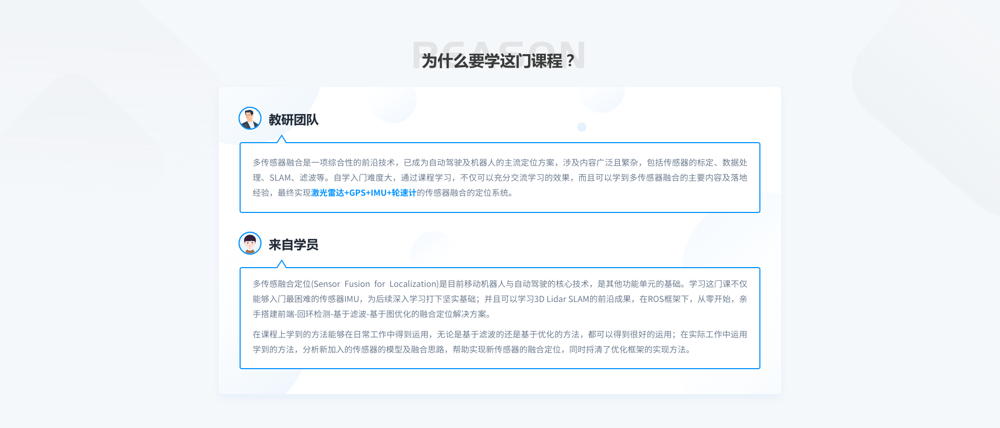
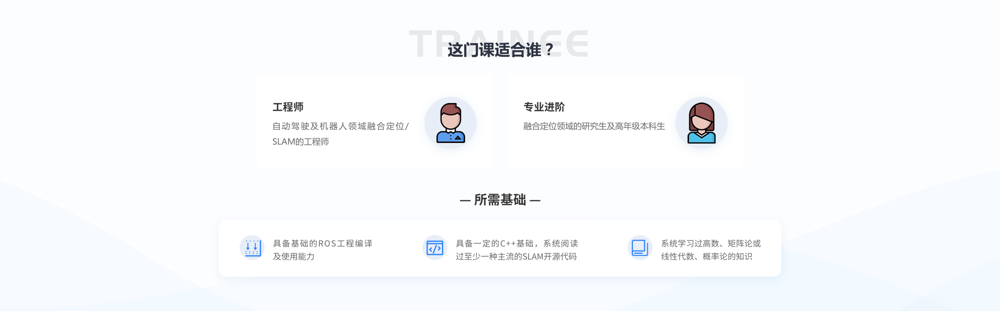
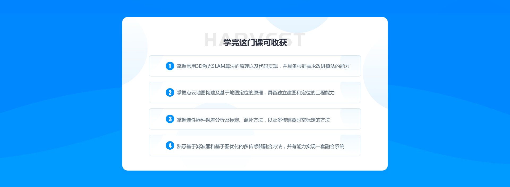
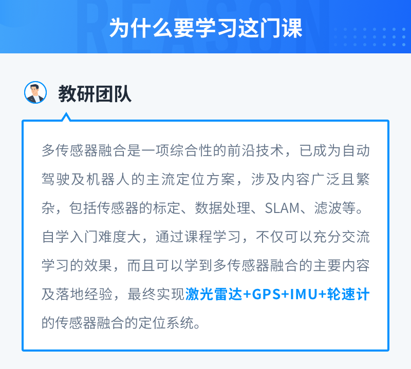
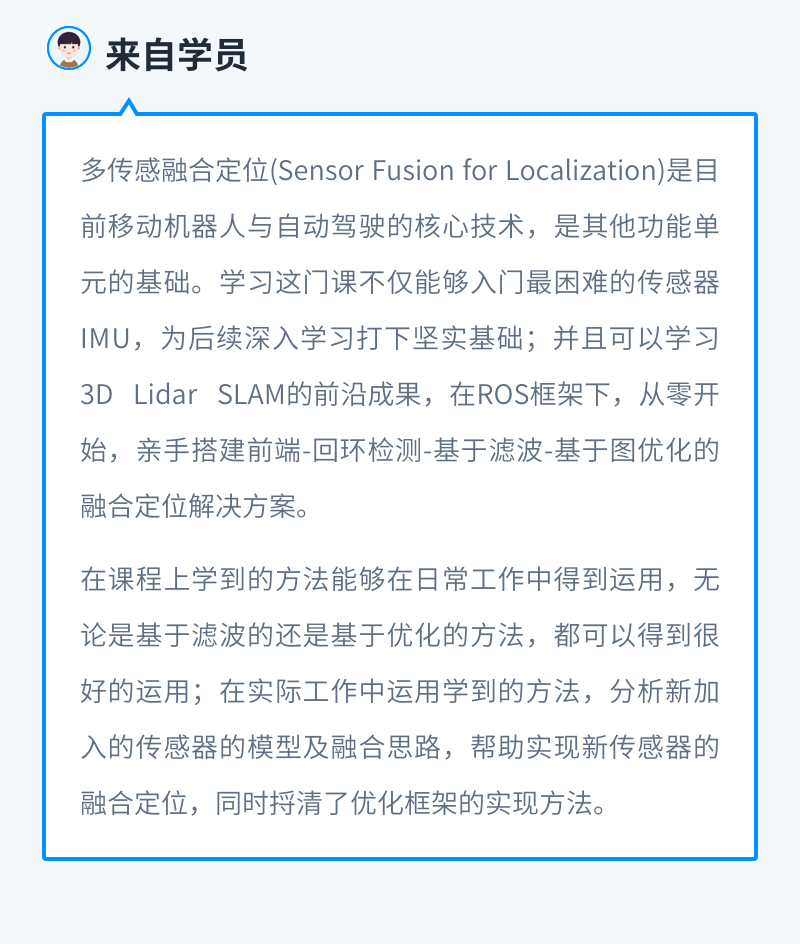

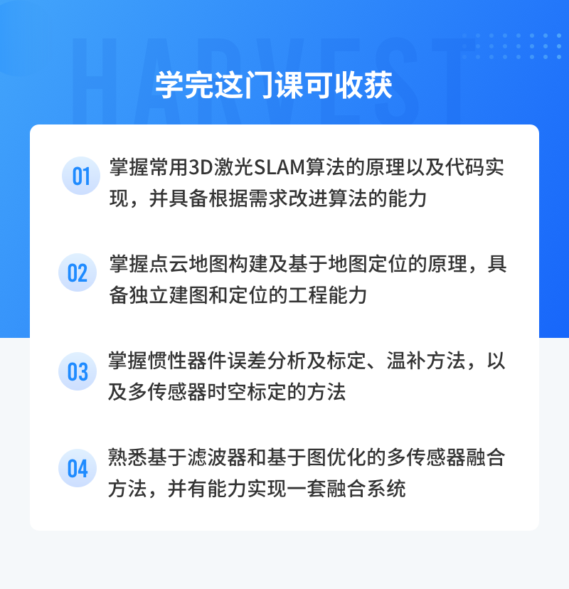
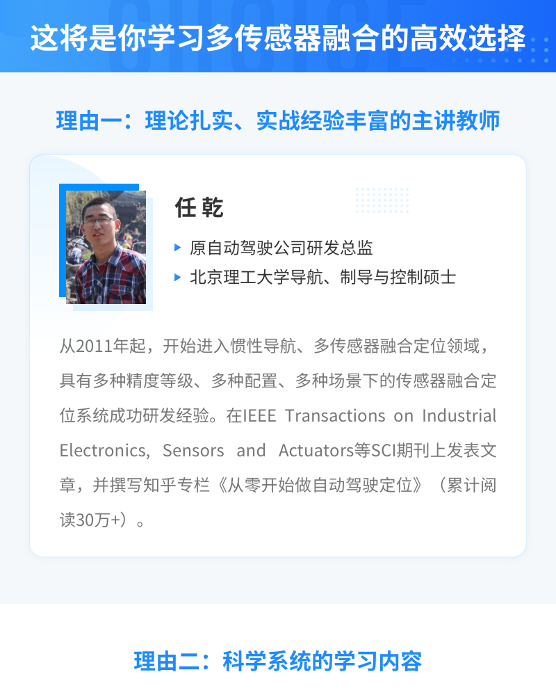
- 1-1：【开课仪式】课程重要信息
- 1-2：【助教分享】融合定位8开课仪式.pdf
- 2：【直播回放】任乾老师答疑1.5
- 第1章: 概述
- 3：多传感器融合定位-第1讲 V2.pdf
- 第1节: 课程概述
- 4：【视频】课程概述
- 第2节: 【作业】环境搭建
- 5-1：【作业】第一章
- 5-2：课程数据集.txt
- 5-3：【环境代码】01-introduction
- 5-4：第一章作业思路-助教刘武.pdf
- 第2章: 3D激光里程计 I
- 6：【课件】多传感器融合定位-第2讲 V1.pdf
- 第1节: 激光雷达工作原理及课程框架
- 7：【视频】激光雷达工作原理及课程框架
- 第2节: 基于SVD的ICP
- 8：【视频】基于SVD的ICP
- 第3节: 基于优化的ICP
- 9：【视频】基于优化的ICP
- 第4节: NDT理论讲解
- 10：【视频】NDT理论讲解
- 第5节: 点云畸变补偿方法
- 11：【视频】畸变补偿
- 第6节: 基于KITTI数据集的实现
- 12：【视频】基于kitti的实现
- 第7节: 作业
- 13-1：【作业】第2章
- 13-2：【代码框架】02-lidar-odometry-basic.zip
- 13-3：多传感器融合定位第二章作业思路-助教刘武.pdf
- 13-4：第二章优秀作业分享.pdf
- 第3章: 3D激光里程计 II
- 14：【课件】多传感器融合定位-第3讲 V1.pdf
- 第1节: 线面特征几何基础
- 15：【视频】线面特征几何基础
- 第2节: 点云线面特征提取
- 16：【视频】点云线面特征提取
- 第3节: 基于线面特征的位姿优化
- 17：【视频】基于线面特征的位姿变化
- 第4节: 位姿优化代码实现
- 18：【视频】位姿优化代码实现
- 第5节: 开源里程计
- 19：【视频】开源里程计
- 第6节: 作业
- 20-1：【作业】第3章
- 20-2：【视频】作业
- 20-3：【代码框架】03-lidar-odometry-advanced.zip
- 21-1：多传感器融合定位第三章作业思路.pdf
- 21-2：第三章优秀作业分享-先礼后兵.pdf
- 第4章: 点云地图构建及基于地图的定位
- 22：【课件】多传感器融合定位-第4讲 V1.pdf
- 第1节: 整体流程介绍与回环检测
- 23：【视频】整体流程介绍与回环检测
- 第2节: 后端优化
- 24：【视频】后端优化
- 第3节: 点云地图建立
- 25：【视频】点云地图建立
- 第4节: 基于地图的定位
- 26：【视频】基于地图的定位
- 第5节: LeGO-LOAM
- 27：【视频】LeGO-LOAM
- 第6节: 作业
- 28-1：【代码框架】04-mapping-and-matching.zip
- 28-2：【作业】第四章
- 28-3：【视频】作业
- 28-4：多传感器融合定位第四章作业思路-刘武.pdf
- 28-5：第四章优秀作业分享-LSF21.pdf
- 第12章: 大作业
- 第1节: 大作业project
理由3：理论结合实践，即学即练
理由三：理论结合实践，即学即练
实践一：基于直接匹配的前端里程计
学习激光传感器原理。学习基干直接匹配的前端里程计方案，包括ICP匹配以及NDT匹配算法。推导基于点到点的ICP算法的SVD解法以及推导经典NDT算法。学习点云畸变的原因以及补偿方法。最后使用KITTI数据集，结合KITTI数据集实现一个基于SVD的ICP匹配算法的前端里程计。并学习使用evo工具评测前段里程计精度。
实践二：基于特征的前端里程计
学习特征中的点线面几何基础，及点云线面特征提取。学习基干线面特征的位姿优化，推导特征法中的线，面残差模型，并推导相应的雅可比。学习现有的开源特征里程计，包括A-LOAM，F-LOAM，LOAM。学习ceres-solver的解析求导与自动求导。使用C++语言和ceres-soler实现基干特征的解析式求导特征里程计。
实践三：基于点云地图的定位
学习回环检测方法，主要包括有初始相对位姿和无初始相对位姿的方法;学习后端优化的基本原理，以及相关数学知识和公式推导。学习基于回环的位姿优化。在课程提供的工程框架的基础上学习点云地图建立的流程，以及工程框架的设计思路。使用C++实现基于点云地图的定位，及载体在地图中任意位置的初始化。
实践四：惯性器件误差分析及标定
学习惯性器件的误差组成并分析惯性器件的误差。学习惯性器件内参误差标定的方法。使用C++语言，按照不需要转台标定方法中所给出的内参模型及残差模型，推导加速度计对应残差对加速度内参的雅可比。使用推导出来的内参模型在仿真数据上验证内参的标定。
实践五：惯性导航解算
学习三维运动描述的基础知识与微分性质，包括四元数和旋转矩阵以及微分方程。学习惯性导航解算，包括欧拉法以及中值法。推导误差方程，包括姿态，速度，位置误差方程。使用C++语言，利用IMU仿真数据，完成基于中值法和欧拉法的解算，并对精度做对比分析。
实践六：基于滤波的融合方法
学习滤波器的作用基本原理，主要包括贝叶斯滤波的原理，卡尔曼滤波的推导，扩展卡尔曼滤波和迭代扩展卡尔曼滤波的推导。学习卡尔曼滤波器的实际使用流程。使用C++语言，构建滤波器，在KITTI上实现基于地图的Lidar和IMU的融合定位。
实践七：运动模型约束融合定位
学习编码器运动模型与标定，学习融合编码器，运动约束和点云特征的的滤波方法。在基于滤波的融合方法的基础上，实现融合运动模型的滤波方法。对比加入运动约束模型约束前后的滤波精度变化。
实践八：基于图优化的建图方法
学习预积分的融合方案流程，以及预积分的模型设计和预积分在优化中的使用。设计预积分的残差，推导雅可比和计算残差的方差。介绍典型方案LIO-SAM。推导融合编码器时的预积分公式的推导。使用C++实现基于IMU预积分的融合方法。
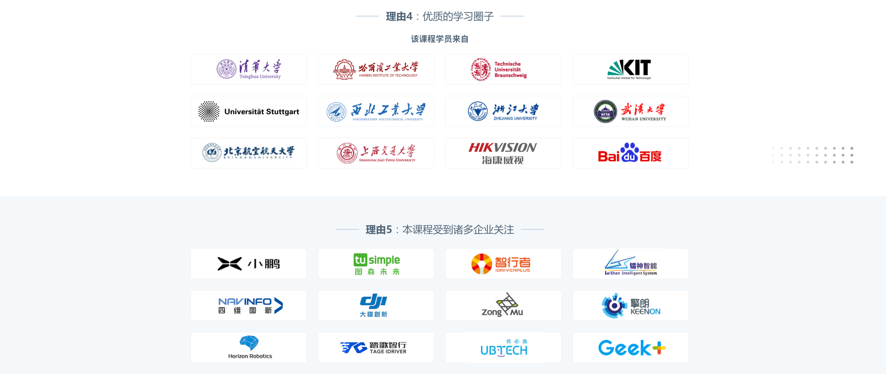
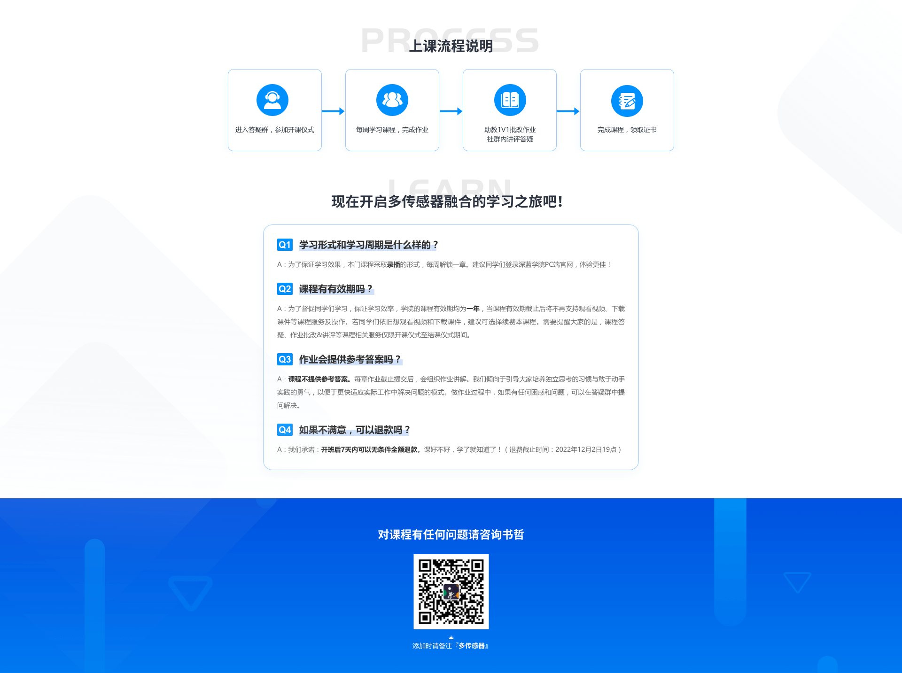
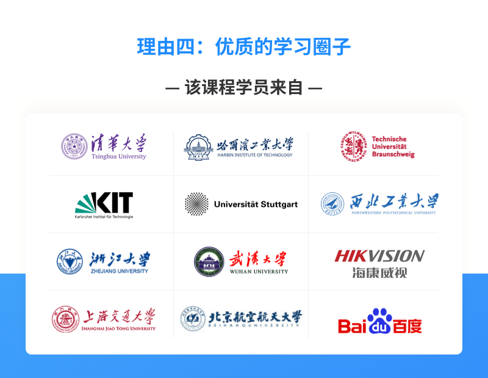
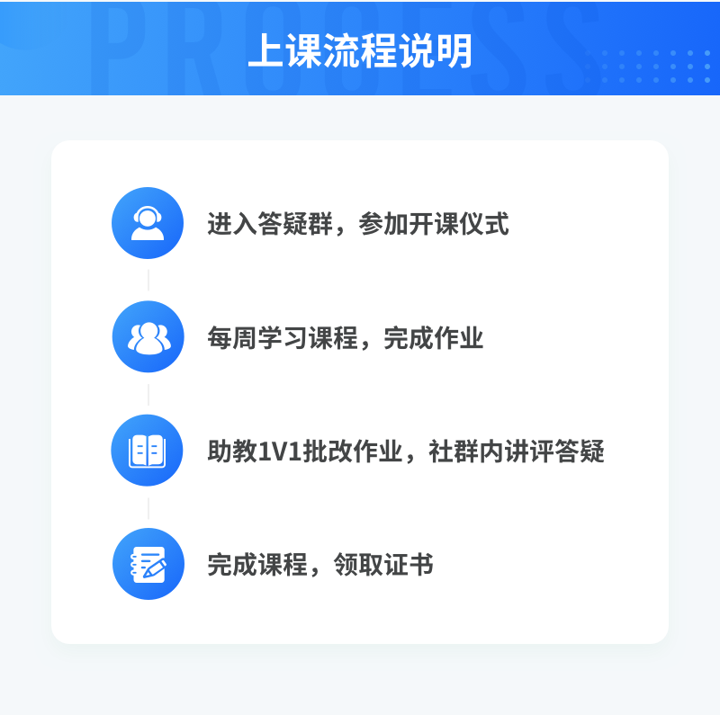
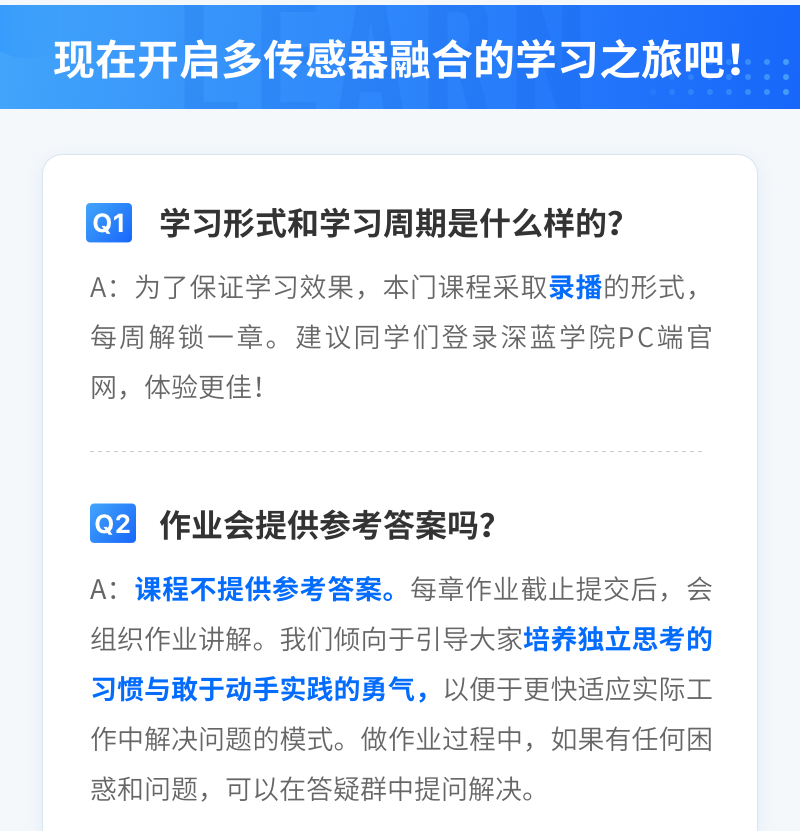